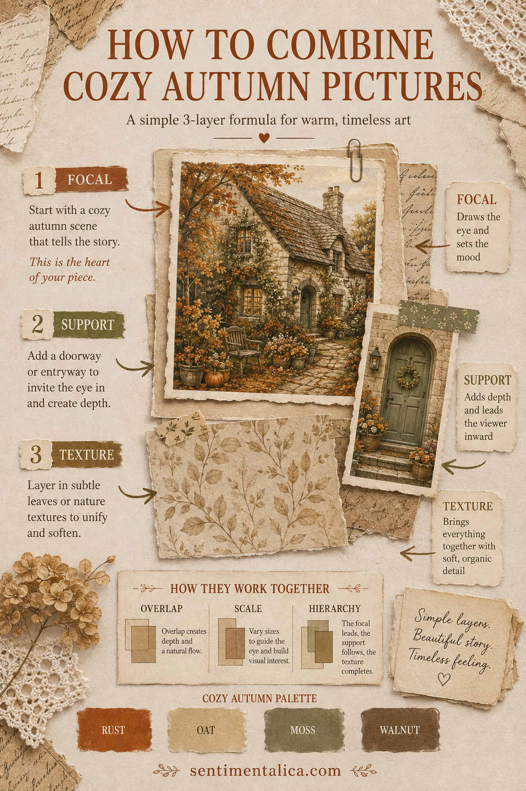
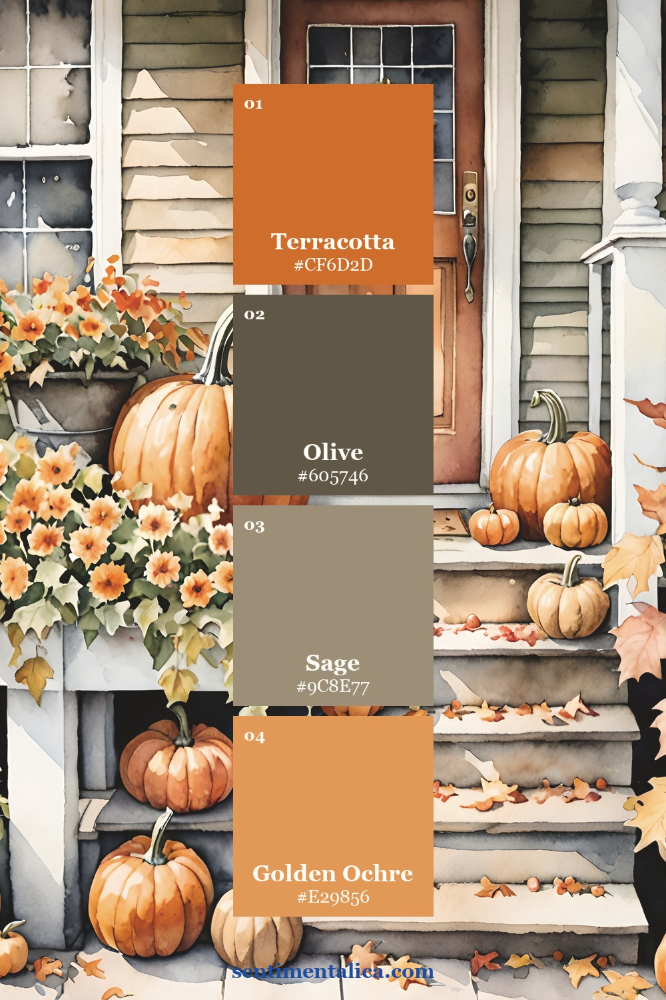
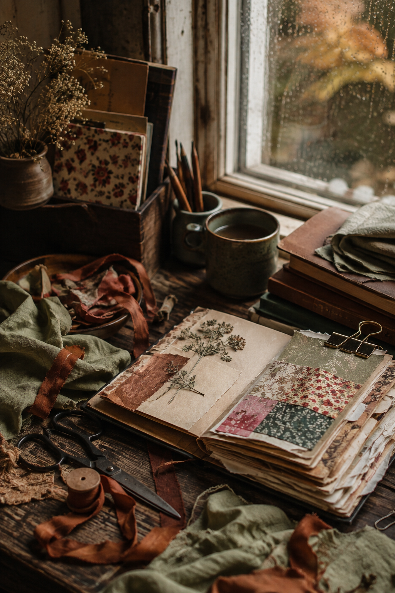

A beautiful printable kit can still produce a confused page if every picture is asked to be the star. The simplest solution is to give three images three different jobs: one focal picture, one supporting picture, and one texture. The Cozy Autumn collection is especially good for this because its cottages, doorways and leafy details feel connected without being identical.

Choose the story before the scraps
Start with one sentence: “I am arriving at a cottage on the first cool evening,” or “I am saving the feeling of a rainy autumn morning.” That sentence tells you which image should be largest. A wide cottage scene feels like a place; a doorway creates an invitation; a close botanical or patterned section works as atmosphere.
Cut the focal image larger than you think you need. Let the supporting image overlap one edge by about a finger-width, then tuck the texture behind both. If all three pieces are the same size, the eye has nowhere to land.
Three palettes for three moods
These palette cards are made from real Cozy Autumn artwork, so the color combinations come from the collection rather than from generic seasonal swatches.

Use the doorway palette when you want a welcoming page. Keep the palest shade for labels and journaling; repeat the warm accent in thread, ribbon or one tiny ticket.

The porch palette is earthier. It works well with kraft paper, old book pages and dark stitching. Resist adding extra orange—there is already enough warmth in the picture.

Choose the cottage palette for a softer spread. Let cream occupy at least half the page, with moss and walnut grounding the lower edge.
Assemble the spread in five moves
- Place the focal image slightly off-center, leaving one generous quiet margin.
- Add the support image so it points inward rather than toward the page edge.
- Slip a low-contrast texture underneath to connect the two pictures.
- Repeat one palette color on the opposite page with a label, tab or line of stitching.
- Stop while there is still a clear place to write.
The best final check is to cover the small pieces with your hand. The story should still be obvious from the focal image alone. Uncover them: the support should add meaning, and the texture should make the composition feel settled—not busier.

Cozy pages do not need dozens of embellishments. A strong picture relationship and a controlled palette create more atmosphere than a crowded pile of seasonal motifs.